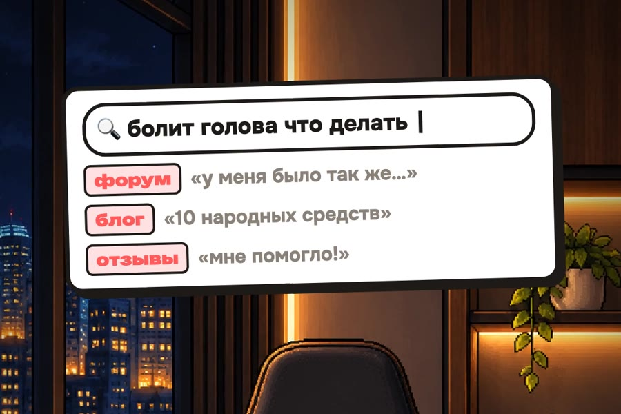

01
Что говорит наука
Вместо форумов — свежие исследования и короткий пересказ без терминов.
Найди в PubMed свежие исследования про [тема, например: дёргается глаз]. Перескажи простым языком: что известно точно, что спорно, и дай ссылку на каждое исследование.